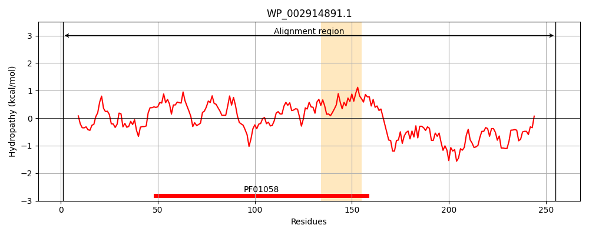
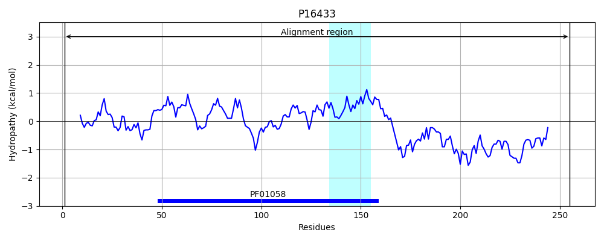
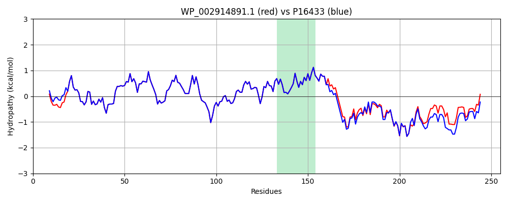

Hit Accession: P16433
Hit TCID: 3.D.1.9.2
Hit Description: gnl|BL_ORD_ID|9219 gnl|TC-DB|P16433|3.D.1.9.2 Formate hydrogenlyase subunit 7 OS=Escherichia coli (strain K12) GN=hycG PE=1 SV=2
Mach Len: 255
e:0.000000
Query TMS Count : 1
Hit TMS Count: 1
TMS-Overlap Score: 1.100000
Predicted Substrates:CHEBI:5584;hydron
BLAST Alignment:
Score: 1254 , Bit scores: 487 bits, E-value: 2.0e-177, Alignment length: 255, Percentage identity: 93
Query: 1 MSTLLGPRDENGIPVPMTVDESIASMKASLLKKIKRSAYVYRVDCGGCNGCEIEIFATLSPLFDAERFGIKVVPSPRHADILLFTGAVTRAMRSPALRAWQSAPDPKICISYGACGNSGGIFHDLYCVWGGTDKIVPVDVYIPGCPPTPAATLYGFAMALGLLEQKIHARLPGELDEQPTELLHADMVQPLRVRIDREARRLAGYRYGRQIADDYMRLLGQGDSQVLRWLEAEKDPRLTEIVTHLNQVVEGARIR 255
MS LLGPRD NGIPVPMTVDESIASMKASLLKKIKRSAYVYRVDCGGCNGCEIEIFATLSPLFDAERFGIKVVPSPRHADILLFTGAVTRAMRSPALRAWQSAPDPKICISYGACGNSGGIFHDLYCVWGGTDKIVPVDVYIPGCPPTPAATLYGFAMALGLLEQKIHAR PGELDEQP E+LH DMVQPLRV++DREARRLAGYRYGRQIADDY+ LGQG+ QV RWLEAE DPRL EIV+HLN VVE ARIR
Sbjct: 1 MSNLLGPRDANGIPVPMTVDESIASMKASLLKKIKRSAYVYRVDCGGCNGCEIEIFATLSPLFDAERFGIKVVPSPRHADILLFTGAVTRAMRSPALRAWQSAPDPKICISYGACGNSGGIFHDLYCVWGGTDKIVPVDVYIPGCPPTPAATLYGFAMALGLLEQKIHARGPGELDEQPAEILHGDMVQPLRVKVDREARRLAGYRYGRQIADDYLTQLGQGEEQVARWLEAENDPRLNEIVSHLNHVVEEARIR 255 | Protein Hydropathy Plots: |
|---|
|  |  |
Pairwise Alignment-Hydropathy Plot:
|
|---|
|  |